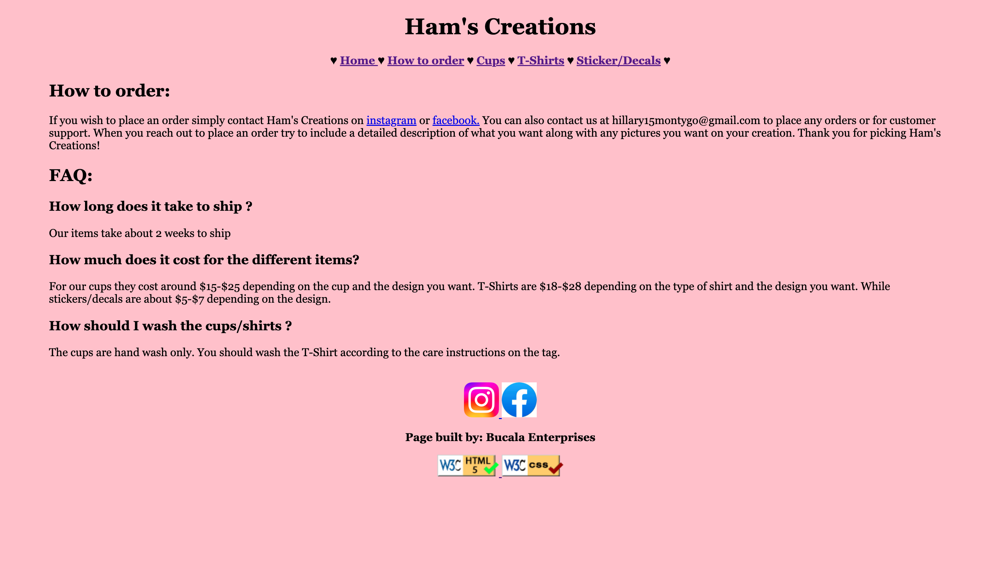
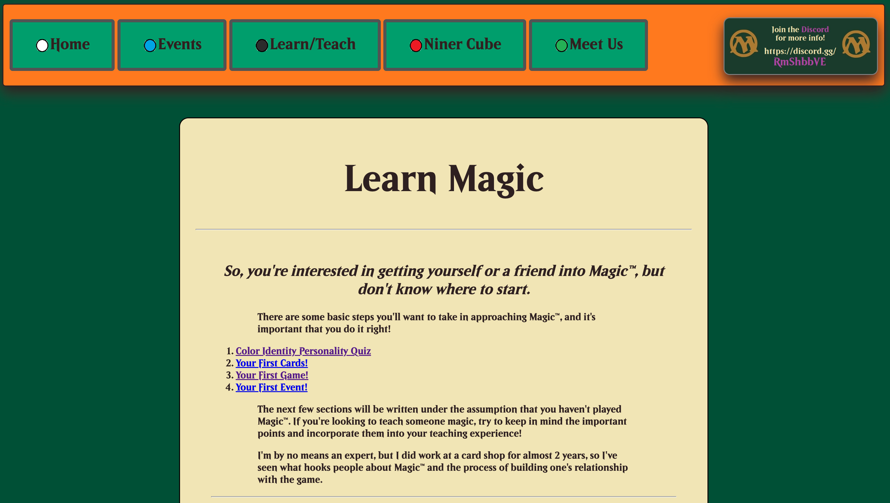

Peer Evaluations for Client Projects
Mike Bucala
 Jbucala WebpageMy Evaluation:
- Design - The only thing I would change about the design is the lack of borders or separators between sections.
- Code Organization - The code is well organized.
- Styling - My only conern is that certain pictures seem to be streched.
- Any other feedback - Overall good information, just needs some touching up for CSS.
Proffesor Requirements Evaluation:
- CRAP - In terms of Contast, there isnt anything separating the header, body and footer but the font color and background are good. (Repetition) The font color, nav bar and spaces (hearts) remain the same throughout the website. (Alignment) Everything seems to be shifted to the left which is fine, doesn't look bad. I do think there is enough space in between everything so the Proximity is good.(
- Header, Main Footer - There is a header and footer but its not exactly separated.
- Folder/file names - All files are lowercase, as are folders, everything looks good.
- HTML/CSS Validation Images - Each page has uniform validation at the bottom.
Evan Schlee
 Eschlee WebpageMy Evaluation:
- Design - The overall design is very neat and clean.
- Code Organization - Everything is nested properly and the code is dry. There is nothing to fix, unfortunately there are quite a few errors when running the validator.
- Styling - The styling is beautiful, see CRAP breakdown for more in depth analysis.
- Any other feedback - Really cool site for a really cool club!
Proffesor Requirements Evaluation:
- CRAP - (Contrast) There is a very clean difference between the header, body and footer. (Repetition) There is a repeated use of colors, fonts and nothing stands out as not belonging. (Alignment) The body is completely centered and the font is shifted to the left, making it ideal. (Proximity)There is just enough line space and general spane between each element.
- Header, Main Footer - There is a clear header and footer.
- Folder/file names - All files are lowercased.
- HTML/CSS Validation Images - Both are present in the footer.